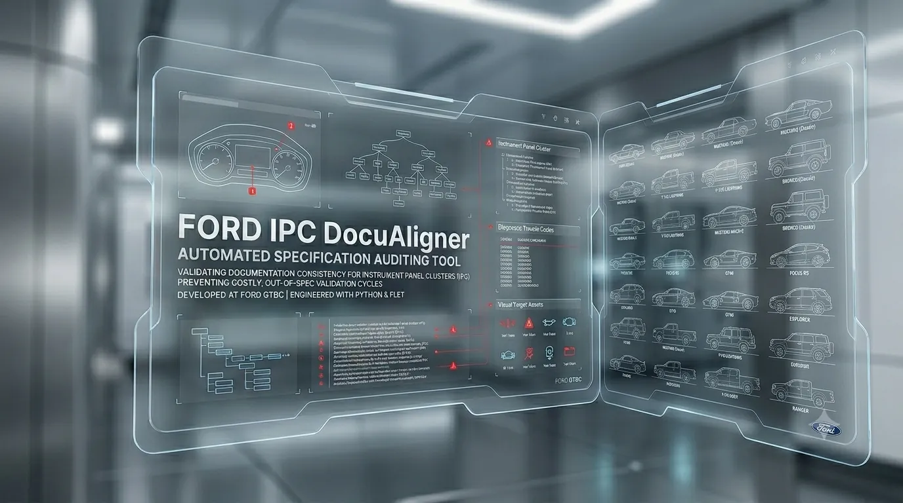
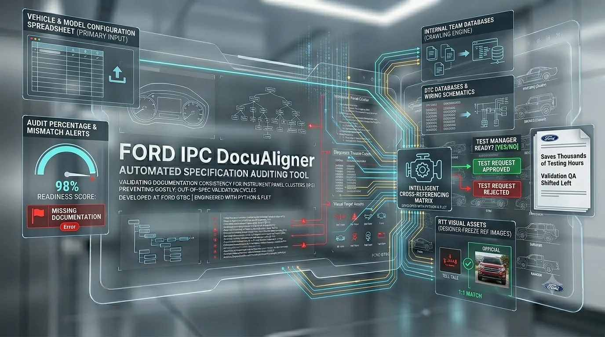
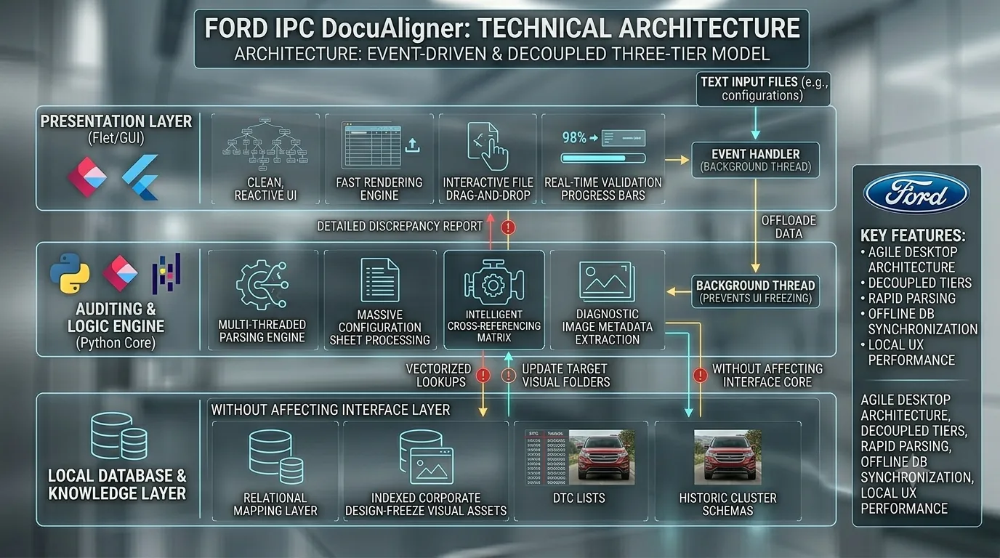

Ford IPC DocuAligner is an automated specification auditing tool developed at Ford's Global Technology and Business Center (GTBC) to validate documentation consistency for Instrument Panel Clusters (IPC). Engineered with Python and Flet, the platform allows test managers and engineers to upload complex vehicle configuration files and instantly cross-reference technical specifications, diagnostic trouble codes (DTC), and visual target assets (such as Tell-Tales / RTTs). By automatically detecting version mismatches and missing technical documentation, the tool prevents costly, out-of-spec validation cycles before they ever reach the physical test benches.

Prevented hundreds of hours of wasted physical testing by stopping mismatched or erroneous documentation from reaching active test engineers.
Replaced manual multi-document cross-referencing spreadsheets with an automated 1-click Python auditing solution.
Automated the cataloging and checking of visual Tell-Tale (RTT) specs against designer reference files to ensure visual target compliance.
Empowered test managers to instantly validate and reject incorrect client test requests before scheduling physical hardware validation.
Validating modern Instrument Panel Clusters (IPCs) requires absolute alignment across an extensive web of technical specifications. Before a test engineer can verify a cluster's screen layout, they must cross-reference vehicle-specific feature sheets, design-freeze visual layouts (like Tell-Tales or RTTs), and diagnostic parameter tables (DTCs). Historically, validating the consistency of these documents was a manual, error-prone task that absorbed days of engineering time, often leading to false bug reports due to outdated documentation.
To eliminate this bottleneck, I developed an automated specification auditor utilizing a highly responsive Python and Flet desktop architecture. The tool enables users to upload a primary vehicle and model configuration spreadsheet. The engine then crawls internal team databases, dynamically mapping and auditing the percentage of available specifications, instantly flagging missing technical documents, and ensuring that no version discrepancies exist between the requested testing protocols and the vehicle's physical firmware limits.
A key feature of the auditor is its intelligent cross-referencing matrix. It automatically parses the active DTC databases against the vehicle’s specific wiring and model features, while simultaneously verifying that every requested Redundancy Tell-Tale (RTT) visual asset exactly matches the designer-freeze reference images. This ensures that what is being requested for testing is physically and logically present in the vehicle configuration.
By delivering an instant, high-level readiness score to test managers, the tool ensures that any faulty or incomplete test requests are rejected and corrected at the source. This shifts validation quality assurance left, saving thousands of testing hours and preventing redundant physical validation on mismatched instrument clusters.

Conceptual workflow illustrating the interaction between the user interface, multi-agent auditing engine, and internal Ford databases. The auditor parses the uploaded configuration file, cross-references the DTCs and visual assets against the local database, and returns a detailed discrepancy report to the user.
Reactive desktop application development, asynchronous state management, and real-time progress indicators.
Vectorized spreadsheet processing, schema mapping, and cross-referencing of diagnostic code tables.
Automated verification of RTT and Tell-Tale image files against official designer design-freeze reference targets.
Relational mapping of vehicle features, Diagnostic Trouble Codes (DTCs), and document version control.

High-level architecture showing the decoupled three-tier design of the Ford IPC DocuAligner tool. The presentation layer is built with Flet, the auditing and logic engine is implemented in Python, and the local database layer manages relational mappings of approved visual assets, DTC lists, and historic cluster schemas.
Ford IPC DocuAligner is designed around an agile, event-driven desktop architecture that prioritizes rapid data parsing, offline database synchronization, and local user-experience performance.
The platform is built using a decoupled three-tier model: Presentation Layer (Flet/GUI): A clean, modern, reactive user interface developed in Flet (Flutter-for-Python), providing fast rendering, interactive file drag-and-drop, and real-time validation progress bars. Auditing & Logic Engine (Python Core): A multi-threaded parsing engine built with Python and Pandas that processes massive configuration sheets, maps diagnostic schemas, and extracts image metadata. Local Database & Knowledge Layer: A relational mapping layer that indexes approved corporate design-freeze visual assets, DTC lists, and historic cluster schemas.
When a configuration file is loaded, the processing is offloaded to a background thread to prevent UI freezing. The auditing engine parses the rows, performs vectorized comparison lookups against the local DB, and returns a detailed discrepancy report. This decoupled architecture allows the engineering team to easily update target visual folders or update the DTC mapping rules without requiring any modifications to the core interface.